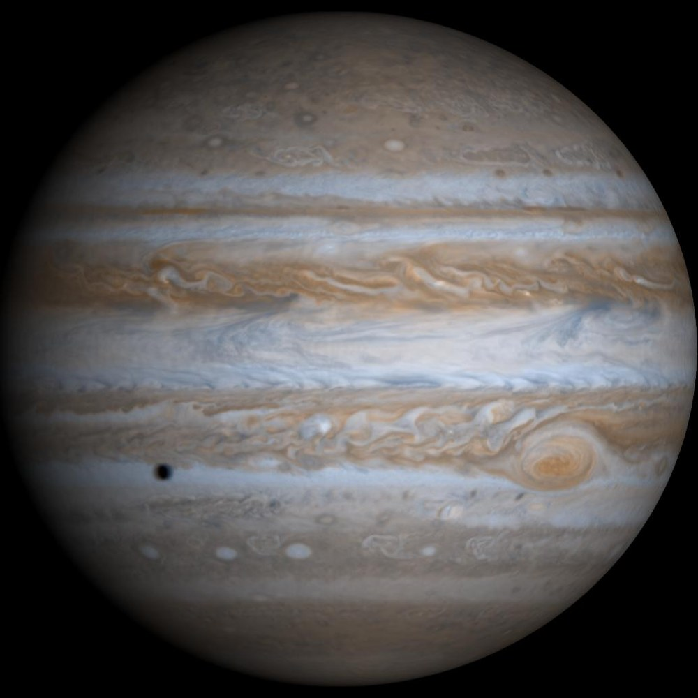

Solar system voyage · Stop 6 of 10
Cloud bands wrap around a giant world. Follow the storms, then imagine descending into an atmosphere with no solid surface to stand on.
5.2 AU from the Sun · mean distance, rounded
Investigate the sunlight
Spacecraft-inspired view. Images are not a live view; sizes and star positions are not to scale. Select an image to examine it with the class.
Predict first: move twice as far from the Sun. How much light reaches the same area?
distance from the Sun
sunlight per m², compared with Earth
one-way light travel from the Sun
1 AU ≈ 150 million km. Model: sunlight ∝ 1 / distance²; light takes about 8.32 minutes per AU. These are Sun-to-location values, not Earth-to-spacecraft communication times. Atmospheres, temperature, and orbital eccentricity are not modeled. NASA solar system reference · NASA planetary distance table.
Could a spacecraft land on Jupiter as a rover lands on Mars?
There is no solid surface like Mars’s crust. A probe descends into increasingly dense gas and extreme pressure and temperature.
Explain your answer using one observation from the image or lesson and one measurement from the sunlight experiment.
Cloud bands wrap around a giant world. Follow the storms, then imagine descending into an atmosphere with no solid surface to stand on.
Jupiter is the solar system's king of planets, containing more mass than all other planets combined. Made predominantly of hydrogen and helium, its outer atmosphere is sheared by high-speed jet streams into dynamic counter-rotating zones and belts.
Jupiter's Great Red Spot is a storm wider than Earth that has been spinning for at least 150 years. Decades of telescope and spacecraft images show it changing shape.